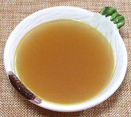

 |
Vegetable StockWorldwide | ||||
| Makes: Effort: Sched: DoAhead: |
8 cups ** 1-3/4 hr Yes |
A vegetable stock suitable for vegetarian or lenten soups, and as stock to include in various vegetarian recipes. See also Variations, and Comments for usage. | |||
|
|
----- 8 10 5 5 8 ----- 2 6 8 4 ----- 1 10 1 |
--- cl oz oz oz --- --- T c t |
-- Vegetables Garlic Leeks (1) Celery (2) Carrots Scallions -- Herbs Bay Leaf Thyme sprig Parsley sprig Peppercorns --------- Olive Oil Water Salt |
Make: - (1-3/4 hr - 1 hr work)
|